Why should the items be clean and dry?
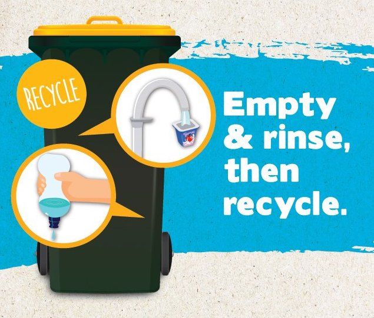If items once contained food or liquid they must be rinsed clean and given a shake to remove the water before going into your recycle bin.
Food and liquid can contaminate the materials in the recycling bin. Wet paper cannot be recycled.
Your mixed recycle bin is sorted into different categories for recycling. If you have placed items inside one another, the machines will not be able to sort them and unwanted items such as food or nappies can enter the system while precious resources are lost.
Please remember that no glass should be placed in the household recycle bin, bottles and jars should be disposed of, free of charge, at you local bring bank.
Packaging labels
Packaging labels and recycling symbols are used to guide citizens to make the right choices when disposing of their waste.
Correct disposal of packaging is vitally important to the circular economy, so that our consumption of resources is as efficient as possible.
In Ireland waste management operates differently than it does across Europe – most packaging materials accepted at the kerbside or at Civic Amenity Centres are exported for recycling or disposal. It is therefore even more important that consumers searching for information about how to dispose of their packaging are given the information applicable to Ireland.
How to recycle particular items?
Pump action bottles
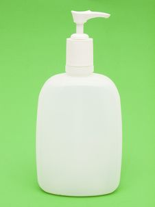The pump soap bottles are made of several parts and it needs to be dismantled. Unscrew the lid, place the bottle part in the recycle bin and the pump action part in the general waste bin
Tapes, video and cassette
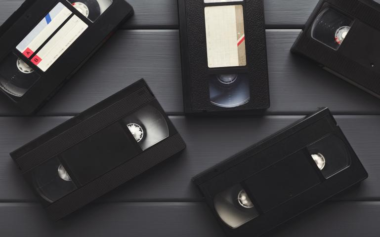For cassette and video tapes if you want to recycle them you will need to take them apart. All of the rigid plastic parts can be placed in your recycle bin and all other parts should go in the general waste bin.
Envelopes with windows
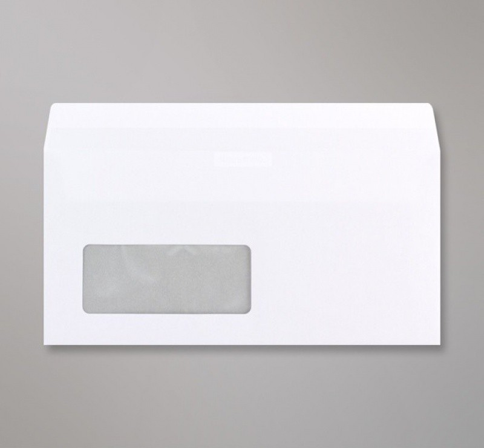For any envelope with a window you can simply tear out that little piece of plastic, place the paper parts in the recycle bin and the soft plastic window goes in the general waste bin.
Lever arch folder
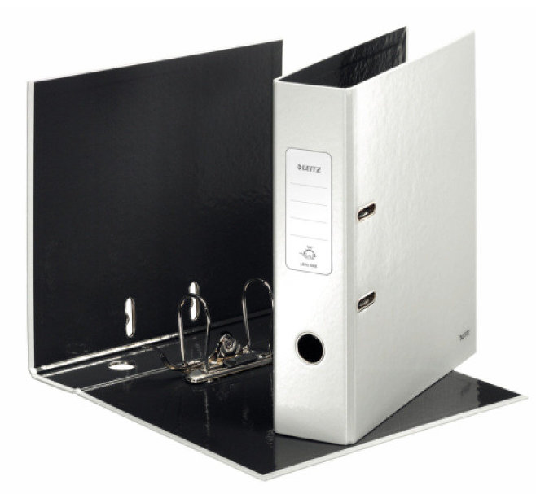The cardboard parts are perfect for the recycle bin as are the mental parts but they need to be added separately so if you can tear out the centre piece and the little ring on the spine.
Coffee pods
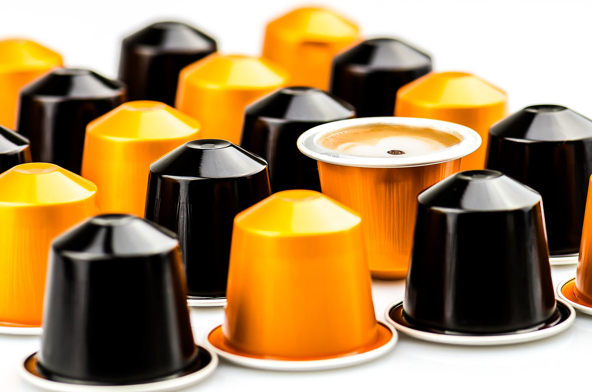You can dismantle coffee pods, clean them and then place the pieces in the recycle bin and the grounds into your food waste recycle bin, the same instruction goes for all types and brands.
DVD cases
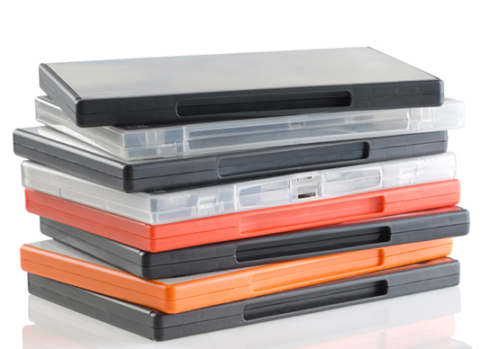Remove the paper sleeve, tear off the soft plastic cover, the rigid case and paper can be placed in the recycle bin and soft cover should go into the general waste.
CD cases

Simply remove the paper sleeve and then all part can go into the recycle bin.
Bags and boxes with windows
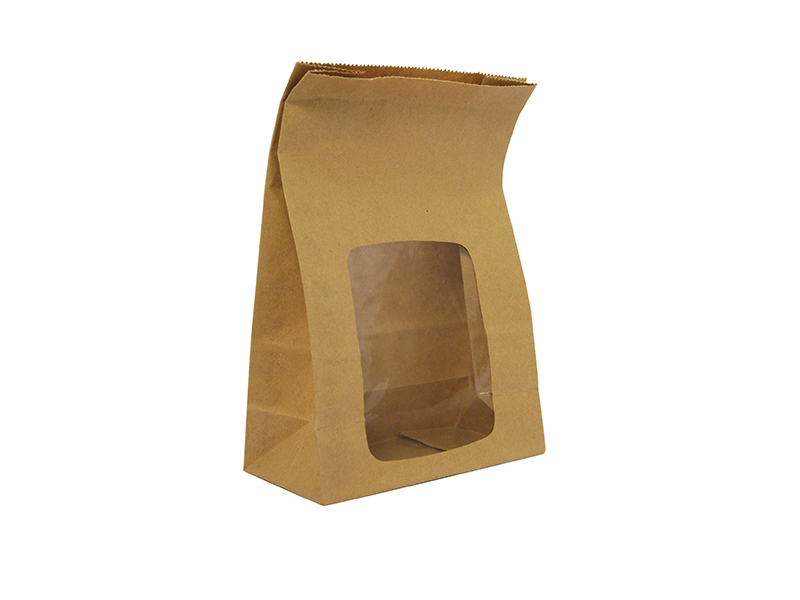Please tear out the soft plastic window, this should be placed in the general waste bin and paper or card left can go in the recycle bin.
Cannot be recycled
Coffee Cups
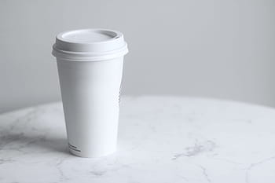A disposable coffee cup is made from paper but has a plastic lining that is difficult to remove, so coffee cups must go in your black bin.
Carrier Bags/ Refuse Sack
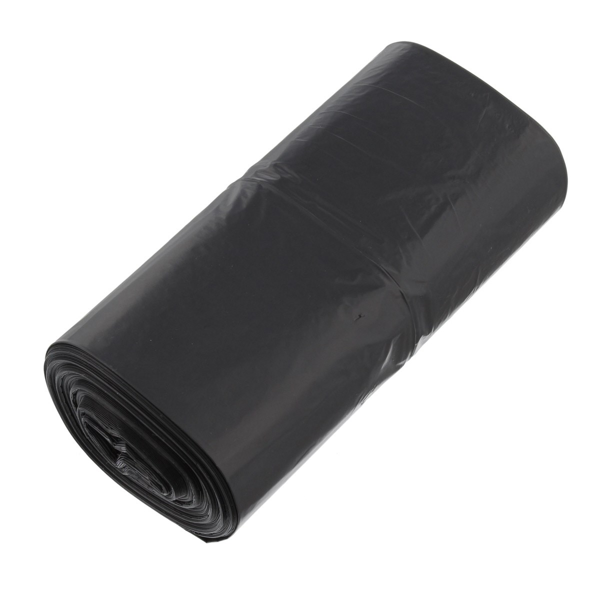Plastic bags get tangled in the machines and slow down work on the sorting lines as people must empty them.
Soft Plastics
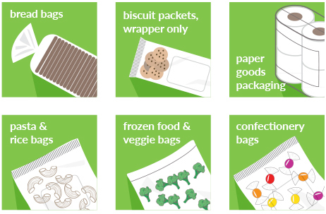We do not have the technology to recycle soft plastics such as wrappers.
Paper Towels/ Napkins
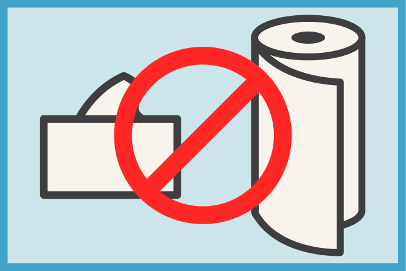These items are usually made from recycled paper that can only be recycled a limited number of times. You can put them in your compost bin.
Aluminium Foil & Trays
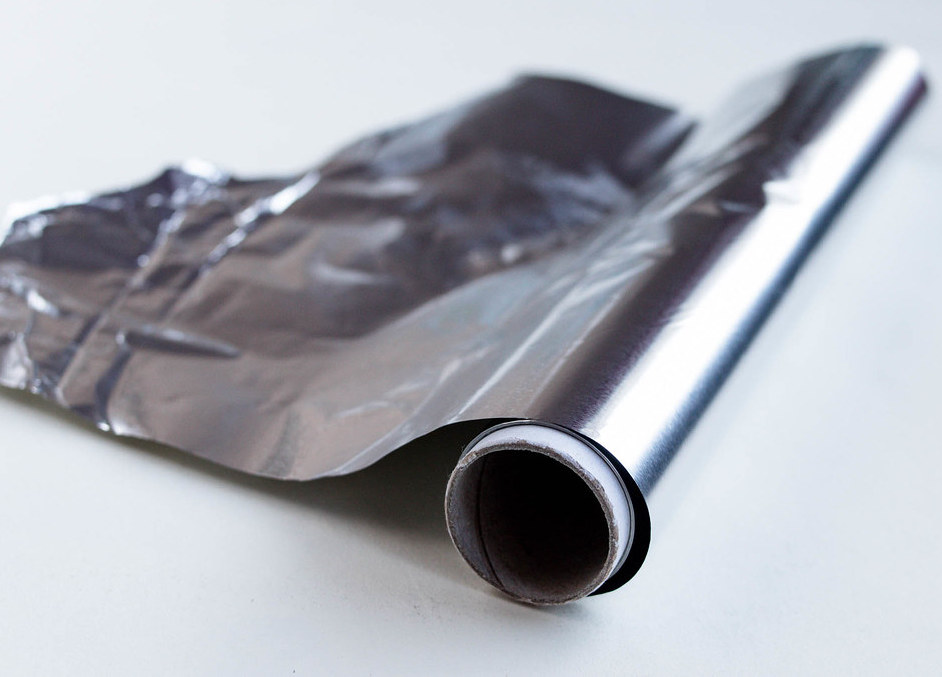Food can be difficult to clean off used foil and trays so it’s best to put them in your black bin
Dirty Pizza Boxes
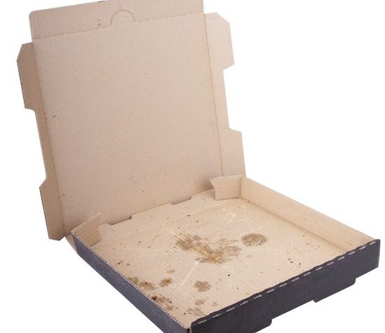Food stained paper should go in the general waste or compost bin as food is a major contaminant in paper recycling.